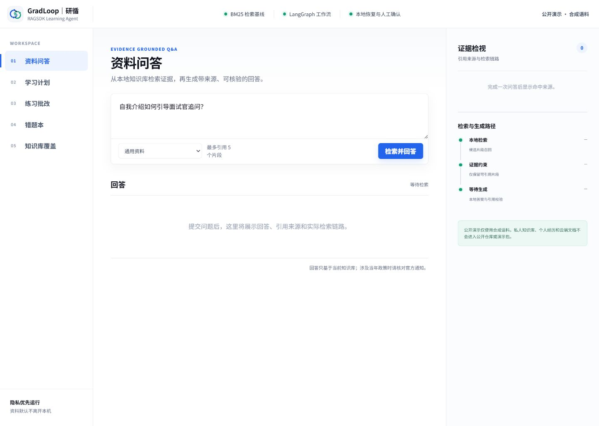
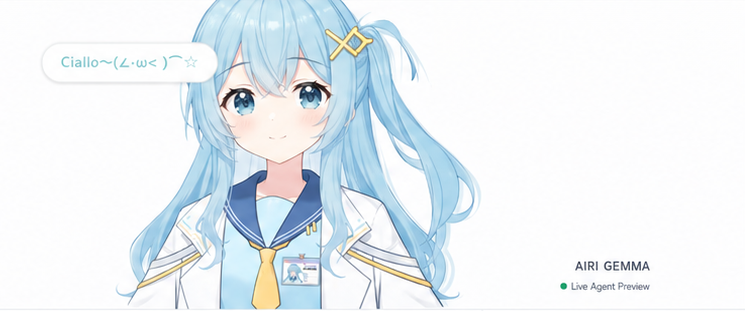
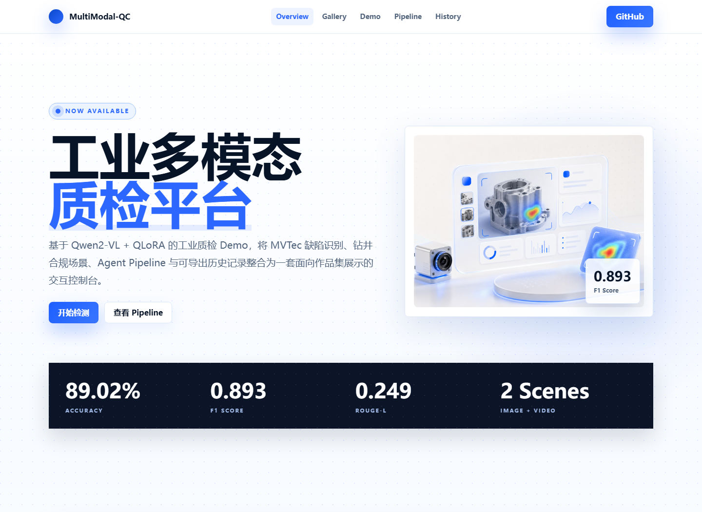
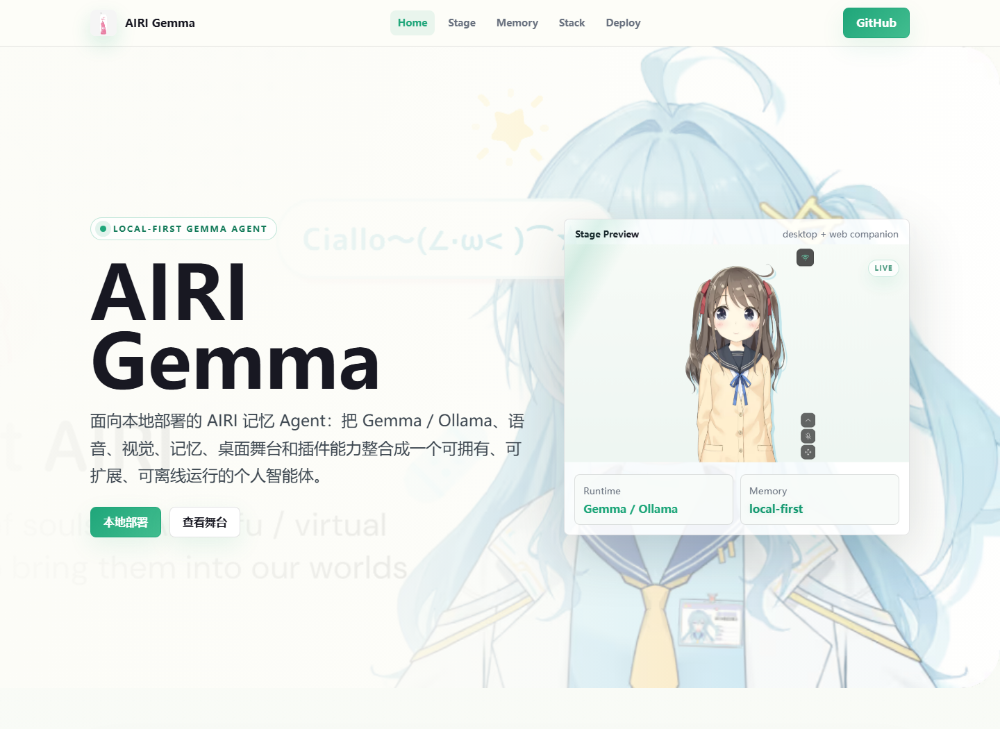
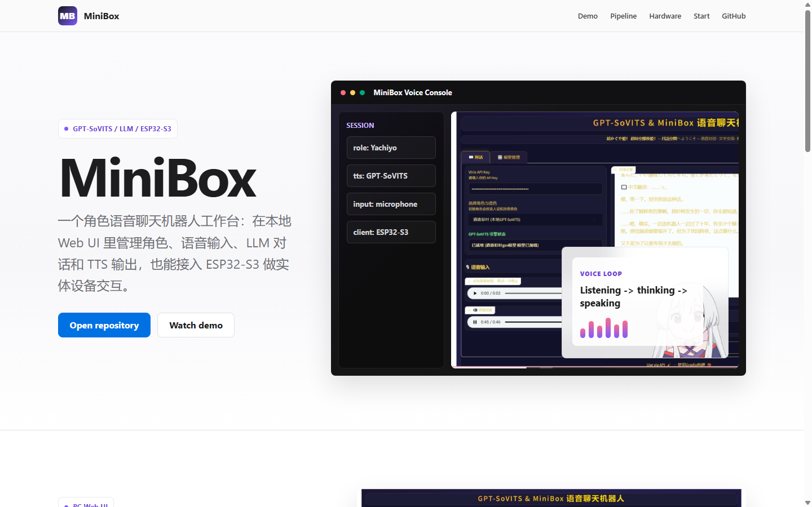
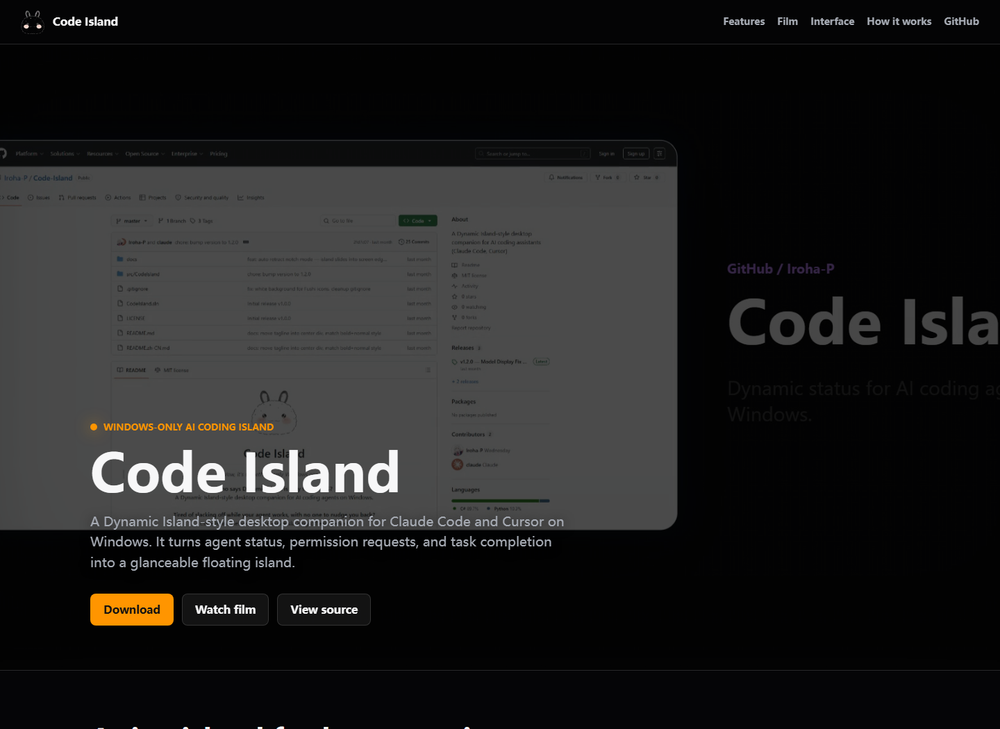
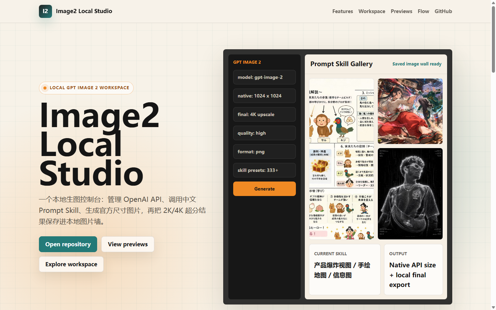

01本地闭环 / 合成演示
GradLoop
证据约束的学习与面试训练 Agent
面向课程学习与面试准备，把分散的资料问答转为“理解—练习—反馈—复习”连续任务。
你好，我是 Wednesday / Iroha-P。
围绕 Agent、RAG 与多模态，
把问题拆清楚，把应用做出来，把效果讲明白。

先看用户问题与产品方案，
再沿着源码、演示与评测，
检查实现和结论。

证据约束的学习与面试训练 Agent
面向课程学习与面试准备，把分散的资料问答转为“理解—练习—反馈—复习”连续任务。

工业多模态质检应用
让缺陷识别结果更便于理解和处理：在判断之外呈现类型、位置、严重程度及处置建议。

从多源知识到长期记忆
让陪伴式 Agent 的记忆可维护：先审核、检查冲突，再写入，减少事实记忆与模型行为的混淆。

角色语音交互与硬件闭环
围绕实体交互的低成本方案，把算力留在 PC，让小型设备聚焦录音播放与陪伴式体验。

让 AI Coding 的状态可见、权限可控
减少在终端与编辑器间反复查看的负担，把思考、工具调用、权限请求和完成状态放到桌面。

把生成与创作知识放进同一工作台
围绕重复创作流程组织工具：用可编辑的 Prompt Skills 复用经验，用图片墙管理生成记录。
每个案例包含产品方案、实现与验证边界。公开演示使用合成语料；图像为项目界面，不代表当前在线推理状态。
以工程能力支撑产品判断，
让每一步都能被解释和检验。
明确用户任务、输入输出和失败路径。先完成一条可使用的核心流程，再扩展能力。
场景 → 核心路径从知识摄取、检索和工具调用，到界面、状态保存与人工确认，关注完整的使用闭环。
模型 → 应用交付保留 Baseline、固定评测和失败样例。区分界面演示、链路连通与实际效果。
验证 → 下一次迭代MultiModal-QC 测试集 n=173：Accuracy 89.02%、F1 0.893、ROUGE-L 0.249。
离线实验指标，非真实工业部署收益。GradLoop Base / LoRA 各 10/10 smoke；固定 5 例评测未获提升，保留 Base。
查看模型实验仓 ↗把任务完成率、失败恢复和使用体验列入下一步验证，不用功能数量代替用户价值。
未宣称用户规模、转化率或商业收入。我的项目主线是大模型应用、Agent 与多模态系统，关注知识如何进入应用、工具如何可靠执行，以及用户如何理解和控制 AI。
Python · FastAPI · LangGraph · SSE · SQLite
RAG · 长期记忆 · MCP / 工具接入
Qwen2-VL · MiniCPM-o · LoRA/QLoRA
GPT-SoVITS · 图文数据 · 对照评测
结合项目说明场景、使用流程、功能优先级与技术取舍，以实际实现和验证结果支撑判断。
机器人算法与仿真实践。持续学习机器人感知、定位、导航与决策，探索与 Agent 系统的连接。
从模型实验到日常工具，持续把想法做成可查看、可复用的项目。
加载公开仓库索引…
大模型应用开发 / AI 产品经理
欢迎通过 GitHub 了解项目与交流。